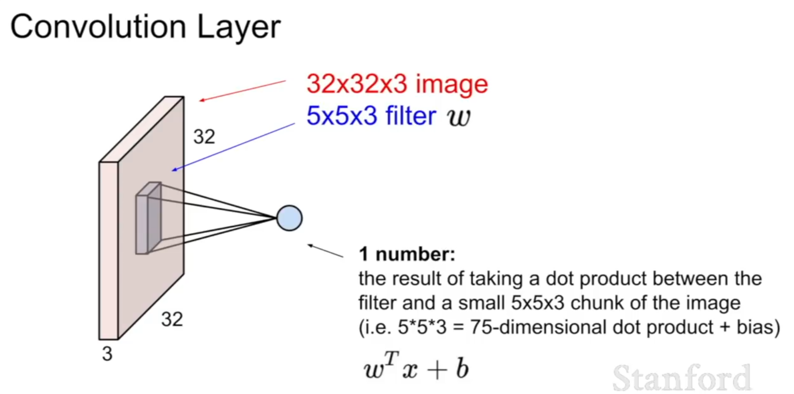
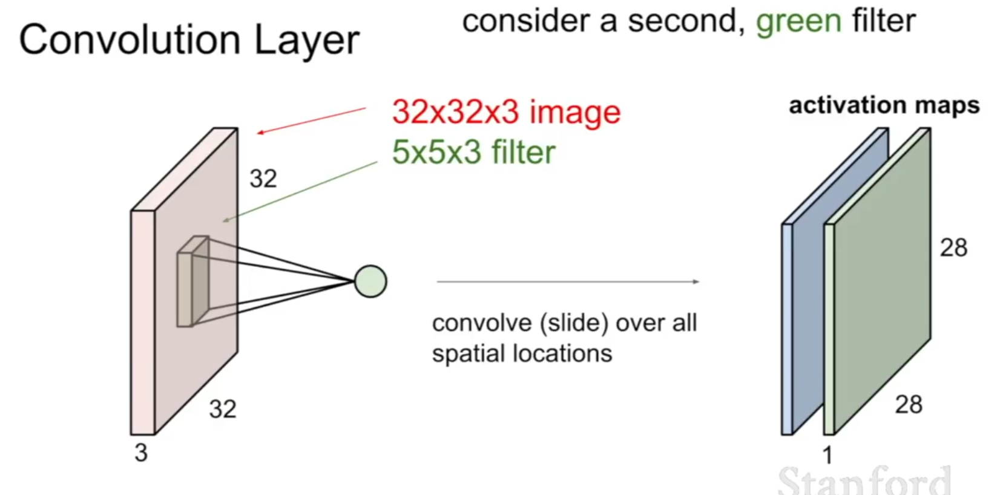
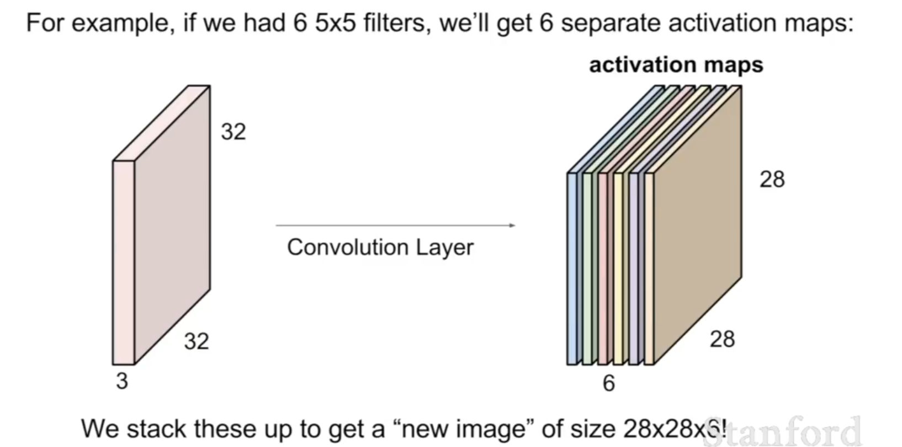
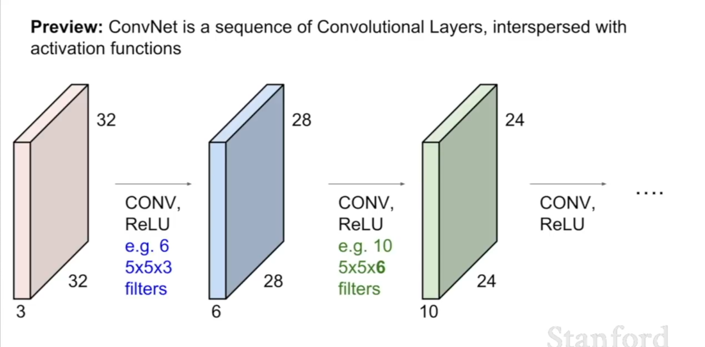
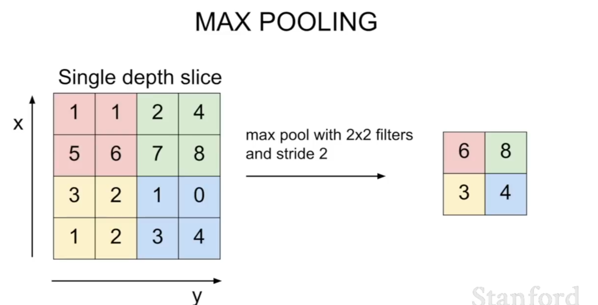
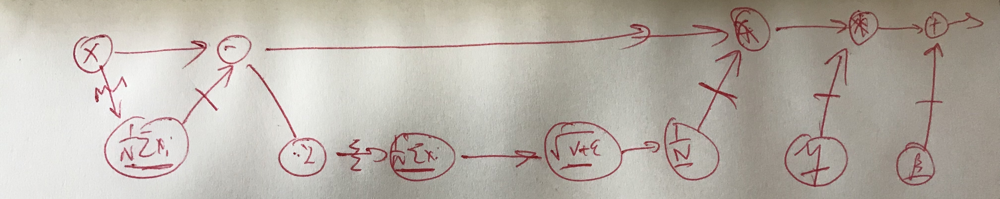
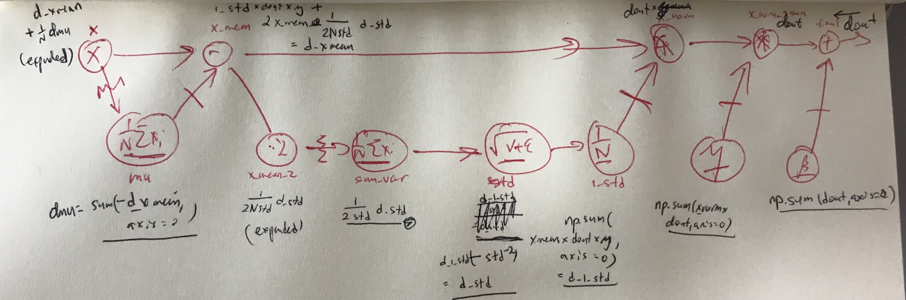

See (1)
History of NN
CNNS
Medical images, classification of galaxies, aerial maps, Image captioning, style transfer
**
**
Note that each filter produces a dot product with the entire depth of the image, and produces one number as output (the results of the dot product for each layer of the image are added together).
Use multiple filters to stack depth in the next layer.
**
**


(2)
Code for Convolutions in Torch (Appendix 4)
Dimensionality of the Convolution (3 for details)
You can slide the convolutional filter also with different stride.
We zero-pad our image so that we can maintain the image size. Note that the number of filters is usually a power of 2.
Example:
Input volume: 32x32x3, 10 5x5 fitlers with stride 1, pad 2
=> 5x5x10 x depth (3) p arameters = 750 parameters + 10 bias terms = 760 parameters
Pooling Layers
Dimensionality of the Pooling Layer (3 for details, but basically 2x2 and 3x3 pooling is all that people ever use)**
**
Compress the prepresentations, downsampling them to make them smaller and more manageable.
Example: Max-pool - take the max activation in each region.
Note that pooling is performed over the whole depth (pooling perserves depth).
Interpretation of max-pooling: the activation is “now much the neuron fired in this region”. Max-pooling gives the maximum of how much each filter is active in the local region (for each filter, because filters are counted in depth and max-pooling is performed over the whole depth).\
Note: You can also use stride to use down-sampling, and is getting more popular, but pooling is preferred.

Trends:
Trend towards smaller filters and deeper architectures, treidn towards getting rid of POOL/FC layers (just CONV)
Typical architectures look like
[(CONV-RELU) *N -POOL?]*M-(FC-RELU) *K, Softmax
where N is usually up to ~5, M is large, K between 0 and 2,
but recent advances such as ResNet/GoogLeNet challenge this paradigm
Appendices
Appendix 1: Computing Backprop
I draw my gradient flow diagrams like this.
If there are any values, here called statistics, aggregated across the batch (like means, std deviations etc. These are 1d and are affected by every instance in the batch, likewise their value affects the backprop of every instance in the batch.) I will underline them.
Every time an aggregation is done, I mark that flow with a squiggle ~~.
Every time a deaggregation is done (the aggregated statistic is applied to all elements of the batch somehow), I mark that flow with a dash —.

In the below image, we show the flor of gradients. Note that whenever the original value is underlined, the gradient must also be underlined (a 1d vector). When we move from not underlined to underlined we use np.sum(…, axis=0). When we move from underlined to not underlined, we mark it as expanded and in numpy we initialize a 2D matrix (e.g. np.ones(N,D)) and adjust it according to the original gradient.
In each gradient computation,
dL/dY1 = dL/dY2 * dY2/dY1
where the first term is the gradient flowing back and the second term is the chain rule derivative of this step. In particular, if we have the flowed back gradient at Y2, we take the flowed back gradient and multiply it by a chain rule derivative with respect to the variables in the previous step Y1. For eample in the image below, given the gradient d_1_std at (1/N) the gradient at √(v+e) is d_1_std * ( - std ^(-2)). Thus we use the value at the previous step and plug it in to the derivative of the current step, and multiply that by the backflowing gradient.
**
**
Appendix 1: Backprop